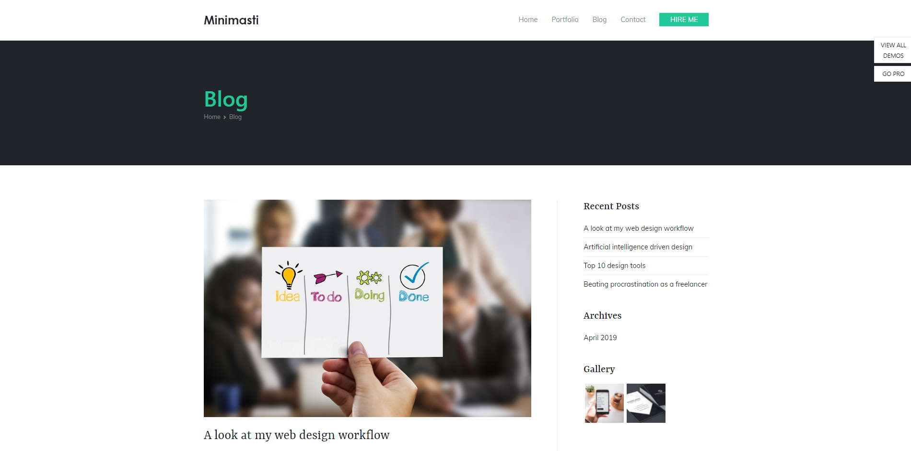
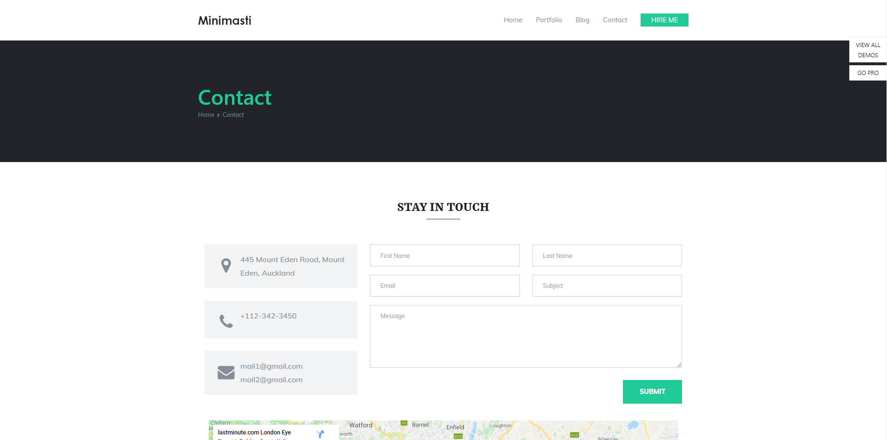

For research, I have compared my website with another similar portfolio website template on the internet. (See the sample website
here.)
We have compared the sites as below.
HomePage:
The home page contains a brief introduction about the person whom the website is based on. The picture on the left is the picture of home page of the sample site and on the right is the picture of my home page. Both the pages have a navigation bar at the top right corner.
Blog Page:

In the blog page, the sample website has used pictures with links which direct the user to full article while in my website you can read the full article on 'How technology has impacted our life?'
Contact Page:

I have put contact details on the contact page. The sample webpage has put a section containing map of his address whereas I have included my coontact details like email address, telephone number and a link to my facebook. You can also convey your message using the form given at the end of the contact page.